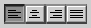

Bevel Buttons as Radio Buttons
A bevel button can be used as a radio button, in which case it takes on a radio button's behavior while retaining the bevel button appearance. Bevel buttons acting as radio buttons are used in groups, just as standard radio buttons are. The behavior for standard radio buttons, described in "Radio Buttons" (page 22), applies to radio bevel buttons. Figure 2-13 shows a group of bevel buttons serving as radio buttons in a text justification toolbar.Figure 2-13 Bevel buttons used as radio buttons in a toolbar
